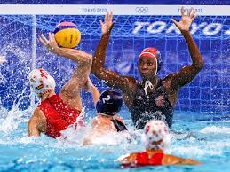

Water polo is a competitive team sport played in water between two teams of seven players each. The game consists of four quarters in which the teams attempt to score goals by throwing the ball into the opposing team's goal. The team with more goals at the end of the game wins the match. Each team is made up of six field players and one goalkeeper. Excluding the goalkeeper, players participate in both offensive and defensive roles. It is typically played in an all-deep pool where players cannot touch the bottom. A game consists mainly of the players swimming to move about the pool, treading water (mainly using the eggbeater kick), passing the ball, and shooting at the goal. Teamwork, tactical thinking and awareness are also highly important aspects. Water polo is a highly physical and demanding sport and has frequently been cited as one of the most difficult to play.[1][2][3] Special equipment for water polo includes a water polo ball, a ball of varying colors which floats on the water; numbered and coloured caps; and two goals, which either float in the water or are attached to the sides of the pool. The game is thought to have originated in Scotland in the mid-19th century; specifically, William Wilson is thought to have developed it in the 1870s as a sort of "water rugby". The game further developed with the formation of the London Water Polo League and has since expanded, becoming popular in parts of Europe, the United States, China, Canada, and Australia
